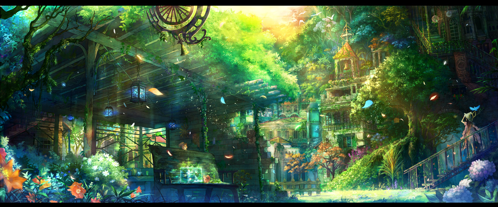

A palavra anime, em japonês, significa animação. No japão, qualquer animação é considerada anime, seja ela nacional ou internacional. Já no Ocidente, a palavra é usada de forma mais específca. Recebem essa denominação apenas os desenhos de origem japonesa.

Yatsude Original - 2016
Qual é a origem do anime?
Osamu Tezuka, considerado o Deus do Mangá, foi o grande responsável pela popularização da adaptação dos quadrinhos para narrativas televisivas. Astro Boy, de 1963, foi a primeira série animada japonesa a contar uma história de forma contínua - assim como é feito com as trilogias de cinema e os seriados de televisão